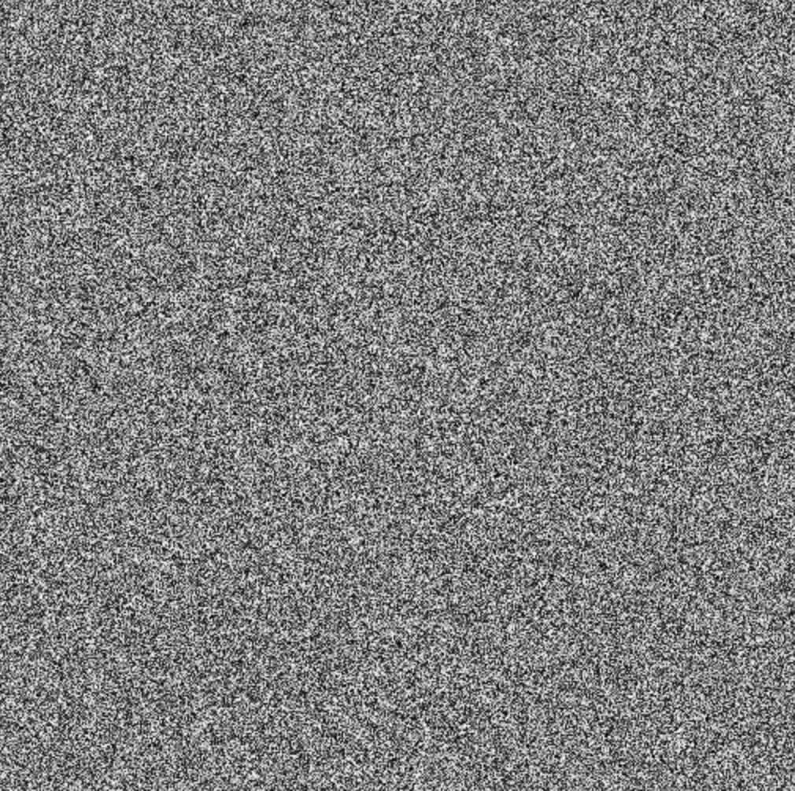
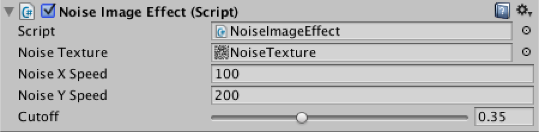
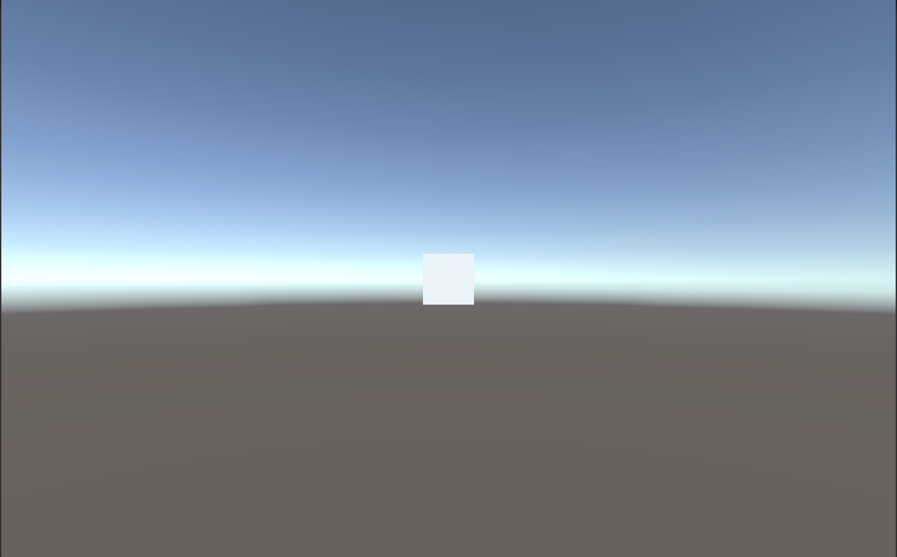
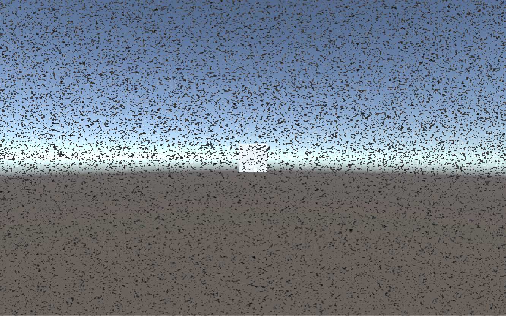

這次利用 Image Effect
製作了一個模擬畫面被雜訊干擾的效果
主要可以應用在一些不同畫面效果處理
例如：夜視效果、復古效果、回顧畫面…等
Noise Effect.shader
Shader "Unlit/Noise Effect"
{
Properties
{
_MainTex ("Main Texture", 2D) = "white" {}
_NoiseTex ("Noise Texture", 2D) = "white" {}
_NoiseXSpeed ("Noise X Speed", Float) = 100.0
_NoiseYSpeed ("Noise Y Speed", Float) = 100.0
_Cutoff ("Cutoff Value", Range(0, 1.0)) = 0
}
SubShader
{
Tags { "RenderType"="Transparent" }
LOD 100
Blend SrcAlpha OneMinusSrcAlpha
Pass
{
CGPROGRAM
#pragma vertex vert
#pragma fragment frag
#include "UnityCG.cginc"
struct appdata
{
float4 vertex : POSITION;
float2 uv : TEXCOORD0;
};
struct v2f
{
float2 uv : TEXCOORD0;
float4 vertex : SV_POSITION;
};
sampler2D _MainTex;
float4 _MainTex_ST;
sampler2D _NoiseTex;
fixed _NoiseXSpeed;
fixed _NoiseYSpeed;
fixed _Cutoff;
v2f vert (appdata v)
{
v2f o;
o.vertex = mul(UNITY_MATRIX_MVP, v.vertex);
o.uv = TRANSFORM_TEX(v.uv, _MainTex);
return o;
}
fixed4 frag (v2f i) : COLOR
{
fixed4 col = tex2D(_MainTex, i.uv);
fixed2 noiseUV = i.uv.xy + fixed2(_NoiseXSpeed, _NoiseYSpeed) * _SinTime.z;
fixed4 noiseTex = tex2D(_NoiseTex, noiseUV);
if(noiseTex.r > _Cutoff)
noiseTex.a = 0;
return noiseTex * col;
}
ENDCG
}
}
}這個 Shader 主要是利用了一張雜訊貼圖
透過改變雜訊貼圖的 UV 來做動畫
並用這張雜訊貼圖與 Image Effect 混合
達到畫面看似被干擾的效果
NoiseImageEffect.cs
using UnityEngine;
using System.Collections;
[ExecuteInEditMode]
public class NoiseImageEffect : MonoBehaviour
{
public Texture noiseTexture;
public float noiseXSpeed = 100f;
public float noiseYSpeed = 100f;
[Range(0, 1.0f)]
public float cutoff = 0.35f;
private string m_noiseTexPropertyName = "_NoiseTex";
private string m_noiseXSpeedPropertyName = "_NoiseXSpeed";
private string m_noiseYSpeedPropertyName = "_NoiseYSpeed";
private string m_cutoffPropertyName = "_Cutoff";
private int m_noiseTexID;
private int m_noiseXSpeedID;
private int m_noiseYSpeedID;
private int m_cutoffID;
private Material m_material;
void Awake ()
{
InitPropertyIDs();
OnValidate();
}
private void InitPropertyIDs()
{
if(m_material == null)
m_material = new Material( Shader.Find("Unlit/Noise Effect") );
m_noiseTexID = Shader.PropertyToID(m_noiseTexPropertyName);
m_noiseXSpeedID = Shader.PropertyToID(m_noiseXSpeedPropertyName);
m_noiseYSpeedID = Shader.PropertyToID(m_noiseYSpeedPropertyName);
m_cutoffID = Shader.PropertyToID(m_cutoffPropertyName);
}
private void OnValidate()
{
if(m_material == null)
m_material = new Material( Shader.Find("Unlit/Noise Effect") );
m_material.SetTexture(m_noiseTexID, noiseTexture);
m_material.SetFloat(m_noiseXSpeedID, noiseXSpeed);
m_material.SetFloat(m_noiseYSpeedID, noiseYSpeed);
m_material.SetFloat(m_cutoffID, cutoff);
}
void OnRenderImage (RenderTexture source, RenderTexture destination)
{
Graphics.Blit (source, destination, m_material);
}
}ExecuteInEditMode
MonoBehaviour.OnValidate
MonoBehaviour.OnRenderImage
附上這個教學中使用的雜訊貼圖

將 NoiseImageEffect.cs 附加到 Camera 上
即可看到修改成果

無雜訊

開啟雜訊
